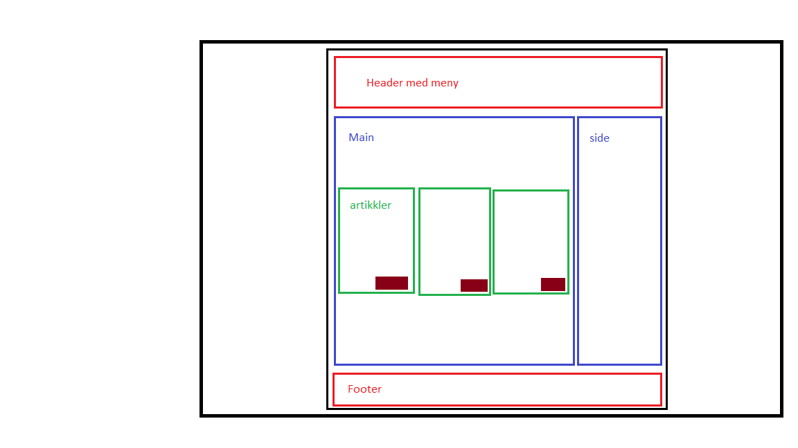
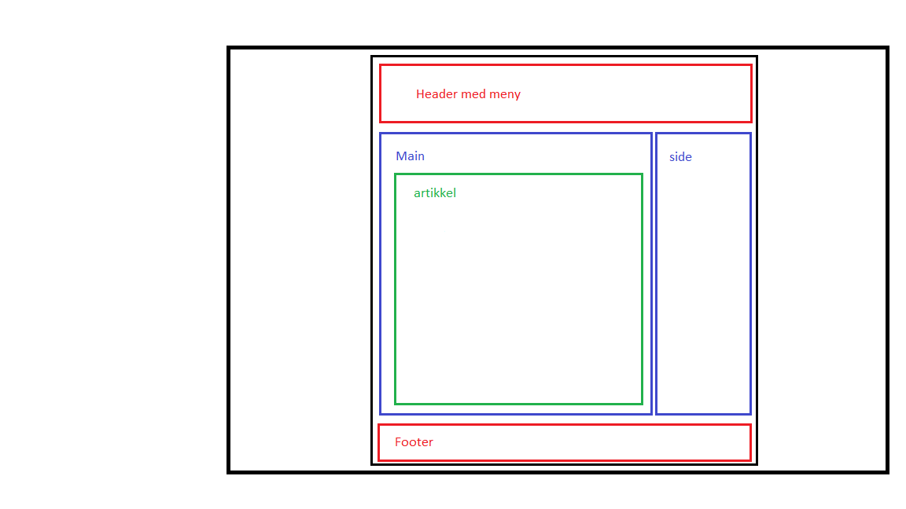

Planlegging av nettsedet.
Ved planleggingen av dette nettstedet tegnet jeg først en skisse av nettstedet i Paint. Jeg ville ha et design som var relativt enkelt å utføre, ettersom jeg ikke er særlig erfaren med webdesign. Som du kanskje ser på tegningene mine er ikke nettsiden helt lik designet, men den er ikke så langt i fra heller, så jeg er rimelig fornøyd.
 Nettsteder som inspirerer meg
| Beskrivelse | Nettsteder |
|---|---|
| Dette er nettstedet til en britisk webutvikler. Jeg liker denne nettsiden på grunn av det enkle og åpne designet. | MadebyDaryl |
| Dette er nettstedet til en Kanadisk webutvikler. Jeg liker fargene og tegningene på denne siden, samtidig som at desiget i seg selv er enkelt. | SeanHalpin |